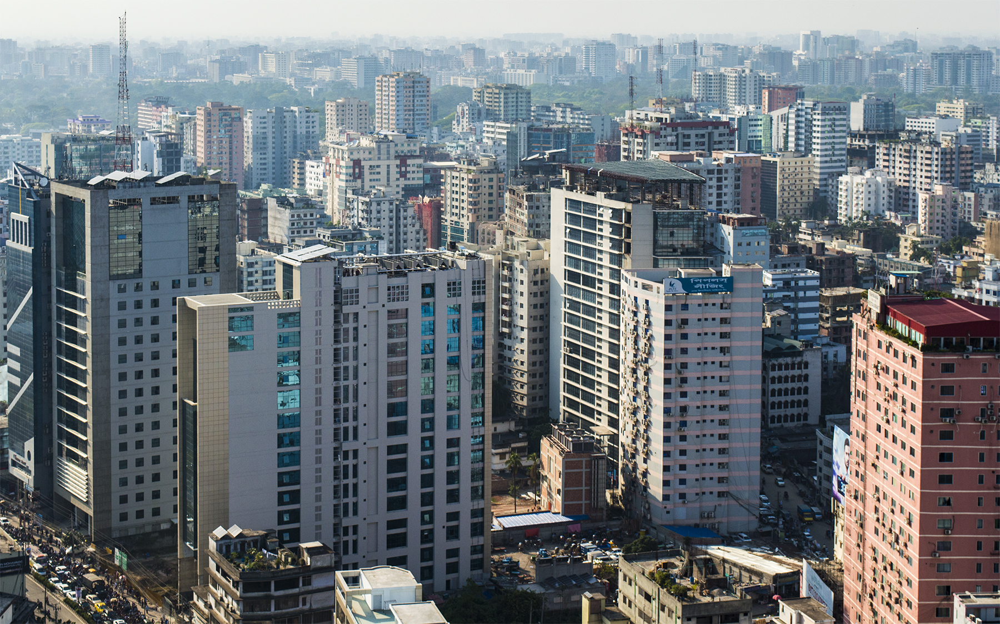

Dhaka
The area of Dhaka has been inhabited since the first millennium. The city rose to prominence in the 17th century as a provincial capital and commercial center of the Mughal Empire. Dhaka was the capital of the proto-industrialised Mughal Bengal for 75 years (1608–39 and 1660–1704). As the center of the muslin trade in Bengal, it was one of the most prosperous cities on the Indian subcontinent. The medieval city was named Jahangirabad in honor of the Mughal Emperor Jahangir and hosted the seat of the Mughal Subahdar, Naib Nazims and Dewans. Medieval Dhaka's glory peaked in the 17th and 18th centuries, when it was home to merchants from across Eurasia. It was the centre of a flourishing sea trade attracting European traders. The Mughals decorated the city with well-laid out gardens, tombs, mosques, palaces and forts. The city was once called the Venice of the East.[11] Under British rule, the city saw the introduction of electricity, railways, cinemas, Western-style universities and colleges and a modern water supply. It became an important administrative and educational center in Eastern Bengal and Assam after 1905.[12] In 1947, after the end of British rule, the city became the administrative capital of East Pakistan. It was declared as the legislative capital of Pakistan in 1962. In 1971, after the Liberation War, it became the capital of an independent Bangladesh.

Sherpur
Sherpur district is bounded on the north by India, on the east by Mymensingh district, on the south and west by Jamalpur district. The main rivers of Sherpur district are Bramhaputra, Kongsho and Vogai. Malijhi, Shomeshwari, Nitai, Maharoshi are some minor rivers of this district. Ceramic soil is the main natural resource of this district. The annual average temperature of this district varies from maximum 33.3 °C to minimum 12 °C.The annual rainfall is 2174 mm.